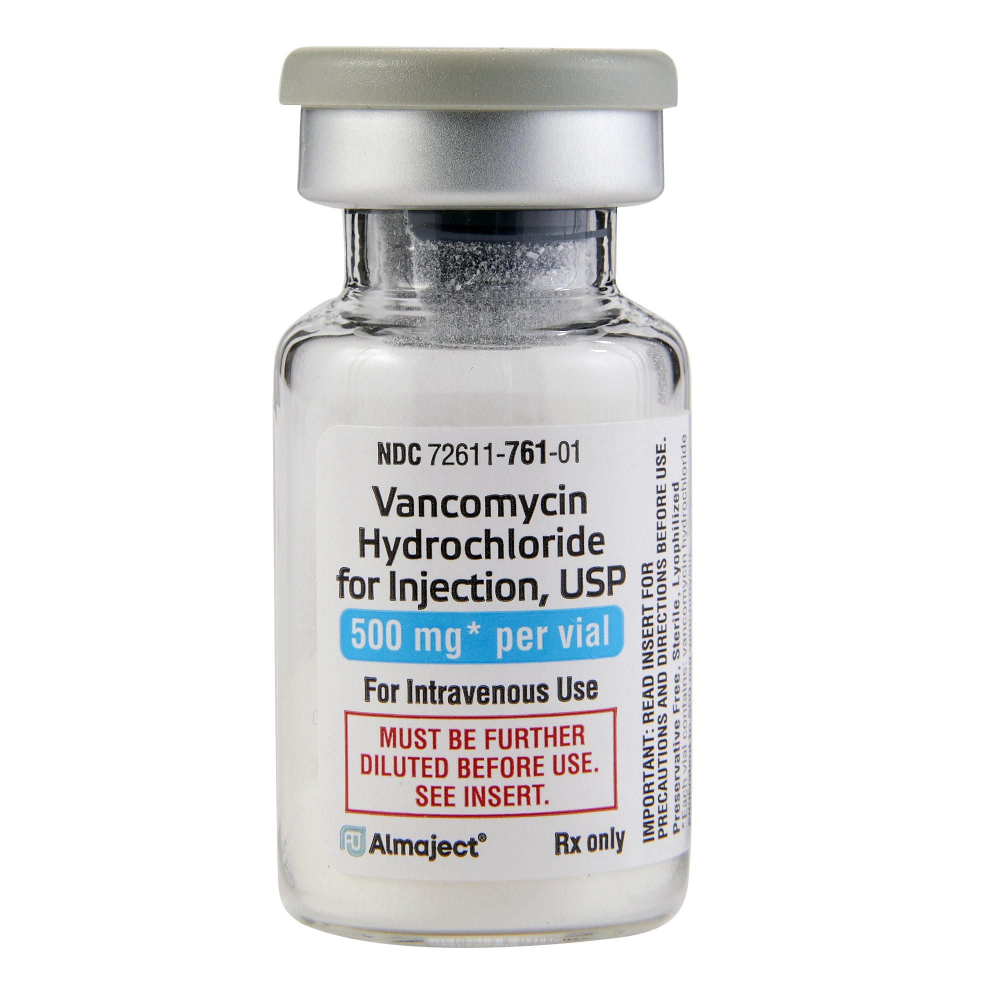

Vancomycin
★
★
★
★
🕒 Time: 15 minutes
💉 Yield: 10mL
Print Recipe
Non-Haz Home
Ingredients
Vancomycin
SWFI
Directions
Reconstitute each Vancomycin Vial with 10mL of SWFI.
Draw up 1mL using a filtered Needle.
Draw up 9mL of SWFI
Mix these two solutions
Take photo.
Once RPH approves, draw up 0.4mL into a 1mL syringe.
Attach Syringe Cap.
Tools
Filtered Needle
Sterile Empty Vial
Syringe Cap